1. Sistemes de fitxers i particions
1.1 Teoria i estructura del disc
Per entendre com s'emmagatzemen les dades, cal distingir clarament entre l'estructura física del disc, la manera com es divideix lògicament i la forma com el sistema operatiu organitza els fitxers.
Estructura física d’un disc
L’estructura física descriu com s’emmagatzema la informació al dispositiu de maquinari:
- Disc dur mecànic (HDD): Les dades es guarden en platets magnètics dividits en pistes i sectors sobre els quals es desplacen capçals de lectura/escriptura.
- Unitat d'estat sòlid (SSD): No conté parts mòbils; les dades s'emmagatzemen directament en memòria flaix.
Un sector és la unitat d’adreçament de baix nivell del dispositiu. La mida física del sector depèn del maquinari (en discs moderns és habitual trobar sectors de 4.096 bytes). Alguns discs exposen sectors lògics de 512 bytes tot i escriure físicament en unitats de 4.096 bytes (format 512e). Per això, la mida de sector que informa el sistema pot ser diferent de la mida física real.
Estructura lògica d’un disc: MBR i GPT
Abans de crear sistemes de fitxers, el disc es divideix en particions mitjançant una taula de particions que descriu on comença i on acaba cadascuna. Els dos formats principals són:
- MBR (Master Boot Record): Format clàssic i senzill amb un límit d'uns 2 TiB per disc quan s'utilitzen sectors lògics de 512 bytes. Admet un màxim de quatre particions primàries (per superar aquest límit cal crear una partició estesa amb particions lògiques a l'interior).
- GPT (GUID Partition Table): Format modern dissenyat per a discs de gran capacitat, que permet crear moltes particions sense el límit de quatre primàries de MBR. Manté còpies de seguretat de la taula i dades de comprovació per detectar corrupció. S'utilitza habitualment amb sistemes d'arrencada UEFI.
Estructura de la informació: Partició, volum i sistema de fitxers
Cal diferenciar tres conceptes fonamentals:
- Partició: Regió del disc definida a la taula de particions; és la divisió lògica de l'espai físic.
- Volum: Unitat lògica d'emmagatzematge que el sistema operatiu pot utilitzar i muntar (un volum pot agrupar una o diverses particions).
- Sistema de fitxers: Estructura organitzativa (directoris, fitxers, metadades i inodes) creada sobre un volum mitjançant el formatatge per poder gestionar les dades.
Sistemes de fitxers, blocs i fragmentació
El sistema operatiu adreça el disc mitjançant sectors lògics, però el sistema de fitxers assigna l’espai en unitats pròpies anomenades blocs. La mida del bloc es tria durant la instal·lació o el formatatge.
En aquest volum ext4, cada bloc ocupa 4096 bytes:
Comanda executada: sudo tune2fs -l /dev/sdb2 | grep Block
Descripció: S'inspeccionen els paràmetres del sistema de fitxers a la partició /dev/sdb2, confirmant que la mida del bloc d'assignació és de 4096 bytes (4 KiB).
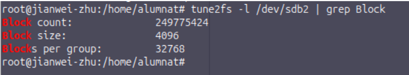
Diferències clau en la gestió de blocs i la fragmentació:
- Fragmentació interna: Es produeix quan un fitxer no omple el bloc complet. Per exemple, un fitxer de text de 15 bytes reserva com a mínim un bloc de 4.096 bytes (4 KiB). L'ordre
ls -l mostra la mida lògica del fitxer (15 bytes), mentre que du -sh aproxima l'espai real ocupat al disc (4 KiB).
- Fragmentació externa: Les parts d'un mateix fitxer queden repartides en zones no contigües. Això alenta la lectura en discs durs mecànics (HDD) a causa dels moviments del capçal. En discs SSD no s'ha d'aplicar desfragmentació rutinària per evitar el desgast inútil de les cel·les de memòria flaix.
Tipus de formatatge
- Baix nivell: Preparació física de pistes i sectors feta durant la fabricació al taller (o sobreescriptura completa amb zeros).
- Nivell mitjà: Creació de l'esquema i la taula de particions (MBR o GPT).
- Alt nivell: Creació de les estructures del sistema de fitxers (inodes, directoris inicials i taules de metadades) sobre un volum.
------------------------------------------------------------------------------------------------------------
↑ Tornar a l'índex
2. Particions i muntatge
En aquest apartat es detalla el procediment pràctic per a la identificació, creació de particions, aplicació de sistemes de fitxers amb mides de bloc personalitzades i configuració del muntatge tant manual com permanent al fitxer de configuració del sistema.
Comanda executada: fdisk -l | grep sdb
Descripció: Es verifica l'existència del disc secundari /dev/sdb (25 GiB) al sistema abans de procedir amb el particionament.
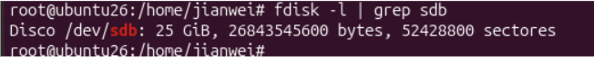
Comandes executades: fdisk /dev/sdb (opcions n i w)
Descripció: Dins de l'eina fdisk es crea una nova partició primària (n) indicant el sector límit 200000 (mida de 96,7 MiB) i s'escriuen els canvis al disc amb w.
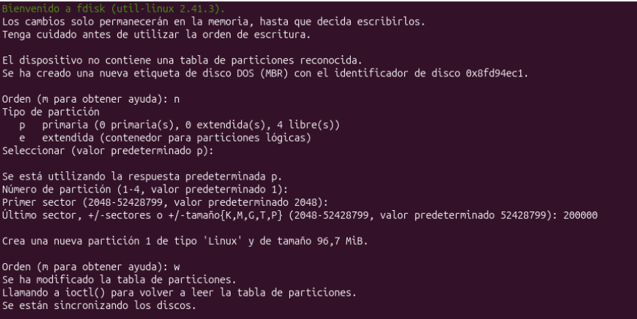
Comanda executada: fdisk -l | grep sdb
Descripció: Es comprova que la nova partició /dev/sdb1 s'ha registrat correctament al disc amb el tipus de partició Linux.
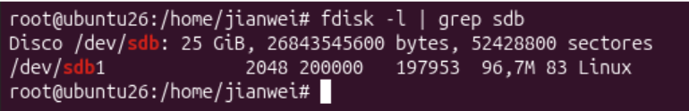
Comanda executada: mkfs.ext4 -b 8192 /dev/sdb1
Descripció: Es crea el sistema de fitxers ext4 sobre la partició /dev/sdb1 forçant una mida de bloc d'assignació de 8192 bytes (8 KiB).
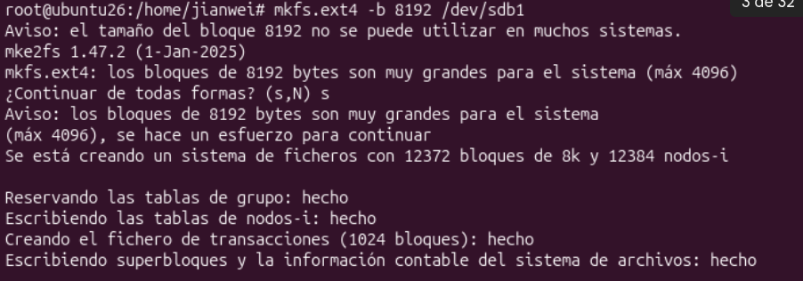
Comanda executada: tune2fs -l /dev/sdb1 | grep Block
Descripció: Es verifiquen les metadades del sistema de fitxers per assegurar que el valor Block size s'ha configurat efectivament en 8192 bytes.
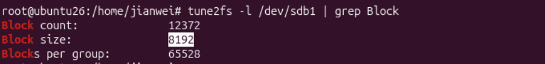
Comandes executades: cd /mnt i mkdir particio1
Descripció: Es crea el directori particio1 dins de /mnt per utilitzar-lo com a punt d'accés al nou volum.
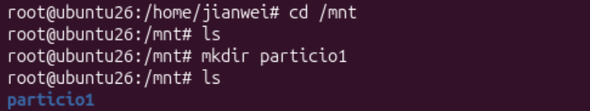
Comandes executades: mount -t ext4 /dev/sdb1 /mnt/particio1/, mkdir prova, touch prova2 i ls -l
Descripció: Es munta manualment la partició, s'accedeix al directori i es comprova la capacitat d'escriptura creant una carpeta i un fitxer de prova.
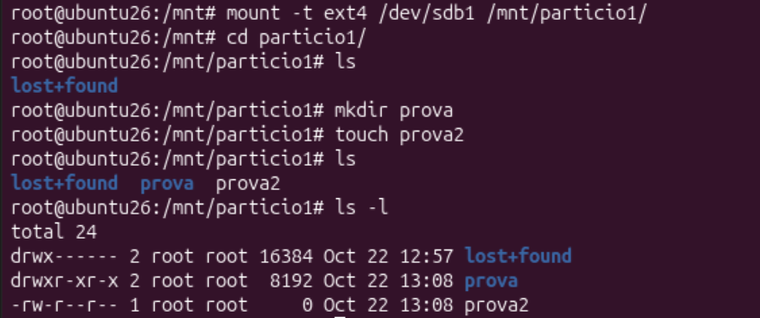
Comandes executades: umount /dev/sdb1, ls particio1/, mount /dev/sdb1 /mnt/particio1/ i ls particio1/
Descripció: Es desmunta el dispositiu per comprovar que el directori queda buit i es torna a muntar per confirmar que el contingut es manté intacte.
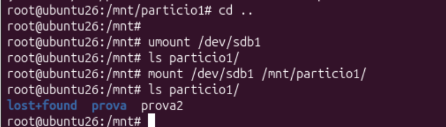
Comanda executada: blkid | grep sdb1
Descripció: S'obté l'identificador únic de la partició (UUID: ec74310d-2673-4e8c-a9b4-a95580ebbc65) per configurar un muntatge persistent.
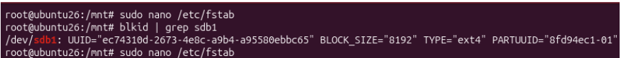
Comanda executada: sudo nano /etc/fstab
Descripció: S'afegeix la línia de muntatge automàtic al fitxer /etc/fstab associant el UUID de la partició al punt de muntatge /mnt/particio1.
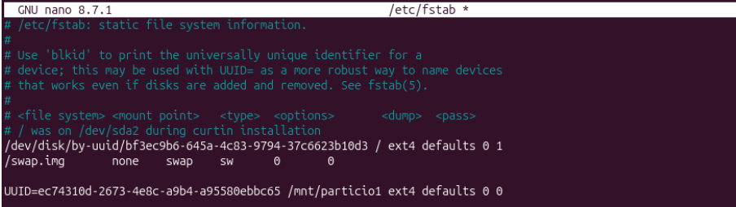
Comanda executada: ls /mnt/particio1/
Descripció: Es comprova finalment des de la sessió d'usuari que la partició és correctament accessible i que mostra els fitxers creats.
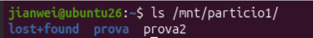
------------------------------------------------------------------------------------------------------------
↑ Tornar a l'índex
3. Gestió de processos
Nivell 0 · Preparar el cas
Comandes executades: chmod +x backup_nocturn espia descarrega.sh sospitosos.sh i ls -l
Descripció: Executem la comanda chmod +x per donar permisos d'execució als scripts de la pràctica i després comprovem amb ls -l que ja apareixen amb els permisos corresponents.

Comanda executada: ./sospitosos.sh
Descripció: Executem el script ./sospitosos.sh per posar en marxa tots els processos en segon pla que hem d'analitzar.

Nivell 1 · Reconeixement
Comanda executada: pstree -p $USER
Descripció: Executem la comanda pstree -p $USER per veure l'arbre de processos del nostre usuari i identificar d'on pengen els processos creats.

Descripció: Mirant la sortida de pstree, identificuem els PIDs dels dos processos minador que s'estan executant.

Nivell 2 · Qui consumeix més?
Comanda executada: top
Descripció: Executem la comanda top per veure l'ús de recursos en temps real i comprovem que els dos processos minador són els que s'estan menjant la CPU.

Nivell 3 · Interrogatori amb ps
Comandes executades: pgrep -l 'minador|espia|backup' i ps -o pid,ppid,user,stat,etime,%cpu,comm -C minador,espia,backup_nocturn
Descripció: Executem pgrep per trobar els PIDs i després fem servir ps amb diferents opcions per veure l'estat exactament de cada procés i quin és el seu procés pare.

Nivell 4 · La descàrrega urgent
Comandes executades: ./descarrega.sh, Ctrl+Z, jobs -l, bg %1 i fg %1
Descripció: Executem la descàrrega, la pausem amb Ctrl+Z, comprovem el seu estat amb jobs -l i la passem a segon pla amb bg i a primer pla amb fg.

Comanda executada: watch -n 1 cat progres.txt
Descripció: Executem la comanda watch -n 1 cat progres.txt des d'una altra terminal per anar veient com avança el fitxer de descàrrega cada segon.

Nivell 5 · Prioritat a la descàrrega
Comanda executada: sudo renice -n -10 -p 8756
Descripció: Executem la comanda sudo renice -n -10 per donar-li més prioritat de CPU al procés de descàrrega i comprovem el canvi de valor NI al top.

Nivell 6 · Neutralitzar els intrusos
Comandes executades: kill 6318 i kill -9 6318
Descripció: Executem primer kill normal per intentar tancar el procés espia i, com que no es tanca, executem kill -9 per matar-lo de forma forçada.

Comanda executada: kill -STOP 4985
Descripció: Executem kill -STOP sobre el procés de la còpia de seguretat per pausar la seva meva execució momentàniament.

Comanda executada: kill -CONT 4985
Descripció: Executem kill -CONT per reprendre l'execució del procés de backup que teníem aturat.

Nivell 7 · Que la descàrrega no es perdi
Descripció: Comprovem a la pantalla del watch que la descàrrega s'ha completat correctament al 100%.

Comanda executada: pstree -ps $(pgrep descarrega)
Descripció: Executem pstree -ps per veure toda la línia de pares del procés de descàrrega fins arribar a systemd.

------------------------------------------------------------------------------------------------------------
↑ Tornar a l'índex
5. Gestió d'usuaris, grups i permisos (Part 1)
Nivell 0 · Conèixer el sistema
Comandes executades: whoami i id
Descripció: Executem les comandes whoami i id per saber quin usuari som exactament al sistema i veure a quins grups pertanyem, juntament amb els nostres UID i GID.

Comanda executada: grep $USER /etc/passwd
Descripció: Executem la comanda grep $USER /etc/passwd per consultar la línia del nostre usuari al fitxer de comptes del sistema, on veiem la carpeta personal i la shell assignada.

Comanda executada: cat /etc/shadow
Descripció: Executem la comanda cat /etc/shadow directament com a usuari root per poder veure el contingut del fitxer de contrasenyes del sistema sense restriccions de permisos.

Comanda executada: sudo grep $USER /etc/shadow
Descripció: Executem la comanda sudo grep $USER /etc/shadow amb root per veure la diferència respecte al pas anterior, ja que com a usuari normal no teníem permisos per veure el hash de la contrasenya.

Comanda executada: getent group sudo
Descripció: Executem getent group sudo per veure quins usuaris del sistema tenen permisos d'administrador i pertanyen al grup sudo.

Nivell 1 · Contractacions
Comandes executades: getent passwd nuria pau marc laia i ls /home
Descripció: Executem getent passwd i ls /home per comprovar que tots els usuaris de l'estudi (nuria, pau, marc i laia) s'han creat correctament amb la seva carpeta a /home.

Nivell 2 · Primer dia
Comandes executades: su - nuria, whoami i pwd
Descripció: Executem su - nuria per canviar a la usuària Núria i comprovem amb whoami i pwd que s'ha carregat el seu entorn i estem a /home/nuria.

Comandes executades: touch primer_dia.txt i ls -l
Descripció: Executem touch primer_dia.txt per crear un fitxer nou com a nuria i verifiquem amb ls -l que ella en queda registrada com a propietària.

Nivell 3 · Departaments
Comandes executades: sudo groupadd progamadors i tail -5 /etc/group
Descripció: Simulem un error en la creació de grups creant per equivocació el grup progamadors (sense la «r») i comprovem amb tail -5 /etc/group que ha quedat registrat al sistema.

Comandes executades: sudo groupdel progamadors i getent group progamadors
Descripció: Executem la comanda sudo groupdel progamadors per eliminar el grup mal escrit i verifiquem amb getent group progamadors que ja ha estat esborrat correctament.

Nivell 4 · Equips
Comandes executades: sudo usermod -G testers nuria i groups nuria
Descripció: Executem usermod -G testers nuria sense el flag -a per veure l'error típic on s'afegeix el nou grup però s'esborren els altres grups secundaris que teníem.

Comandes executades: sudo usermod -aG programadors nuria i groups nuria
Descripció: Executem usermod -aG programadors nuria amb el flag -aG per afegir la Núria al grup de programadors de forma segura sense perdre la resta de grups.

Comanda executada: getent group programadors artistes testers becaris
Descripció: Executem aquesta comanda per llistar els departaments creats i comprovar que tots els usuaris han quedat ben assignats als seus grups.

Nivell 5 · Canvi de departament
Comandes executades: sudo usermod -g programadors pau, id pau i ls -l
Descripció: Executem usermod -g programadors pau per canviar el grup principal d'en Pau i comprovem que els nous fitxers que crea passen a pertànyer a aquest nou grup.

Nivell 6 · El tràiler filtrat
Comanda executada: sudo grep marc /etc/shadow
Descripció: Executem sudo grep marc /etc/shadow per inspeccionar la contrasenya xifrada d'en Marc abans d'aplicar-ne el bloqueig de seguretat.

Comanda executada: su - marc
Descripció: Executem su - marc per intentar accedir al compte bloquejat d'en Marc i comprovem que el sistema ens mostra directament un fallo d'autenticació.
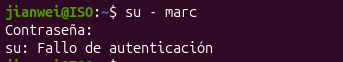
Comandes executades: sudo passwd -u marc, sudo passwd -S marc i su - marc
Descripció: Executem sudo passwd -u marc per treure el bloqueig de la contrasenya d'en Marc, verifiquem l'estat amb passwd -S i comprovem que ara ja pot tornar a iniciar sessió normalment.

Nivell 7 · Nova norma de noms
Comandes executades: sudo usermod -l nvidal nuria, id nvidal i grep nvidal /etc/passwd
Descripció: Executem usermod -l nvidal nuria per canviar el nom d'usuari de nuria a nvidal i verifiquem amb id i /etc/passwd que manté el mateix UID (1001).

Comandes executades: sudo groupmod -n nvidal nuria, sudo usermod -d /home/nvidal -m nvidal, ls -l /home/nvidal i su - nvidal
Descripció: Executem groupmod -n per canviar el nom del seu grup personal, usermod -d -m per traslladar la seva carpeta personal a /home/nvidal i comprovem que pot iniciar sessió correctament.

------------------------------------------------------------------------------------------------------------
↑ Tornar a l'índex
6. Gestió d'usuaris, grups i permisos (Part 2)
Nivell 0 · Muntar l'estudi
Comandes executades: sudo mkdir -p /srv/pixelforge, cd /srv/pixelforge, sudo mkdir codi art proves compartit, sudo touch codi/joc.py art/logo.png proves/informe.txt i ls -l /srv/pixelforge
Descripció: Es crea la carpeta principal de l'estudi i les subcarpetes per a cada departament, verificant amb ls -l que inicialment la propietat pertany a l'usuari root.

Nivell 1 · Llegir els permisos
Comanda executada: ls -l /srv/pixelforge/codi/joc.py
Descripció: Es comprova la sortida del fitxer inicial, mostrant els permisos de lectura i escriptura per al propietari i de lectura per al grup i altres (-rw-r--r--).

Comandes executades: ls -ld /srv/pixelforge/codi i stat /srv/pixelforge/codi/joc.py
Descripció: S'inspecciona el directori amb ls -ld per visualitzar els permisos de la carpeta i es comprova amb stat la representació en mode octal (0644) i simbòlic (-rw-r--r--).

Nivell 2 · chmod numèric
Comandes executades: sudo chmod -R 750 /srv/pixelforge/codi, ls -ld /srv/pixelforge/codi i sudo ls -l /srv/pixelforge/codi
Descripció: S'estableixen els permisos 750 (rwxr-x---) de forma recursiva a la carpeta codi i al seu contingut.

Comandes executades: sudo chmod 755 /srv/pixelforge/art, sudo chmod 640 /srv/pixelforge/proves/informe.txt i ls -l /srv/pixelforge/proves
Descripció: Es permet l'accés públic de lectura a la carpeta art (755) i es restrringeix l'informe de proves a mode privat per al grup (640).

Nivell 3 · chmod simbòlic
Comandes executades: sudo chmod u-w /srv/pixelforge/art i ls -ld /srv/pixelforge/art
Descripció: S'extreu el permís d'escriptura a l'usuari propietari mitjançant u-w, passant els permisos a dr-xr-xr-x.

Comandes executades: sudo chmod u+w /srv/pixelforge/art, sudo chmod o= /srv/pixelforge/art i ls -ld /srv/pixelforge/art
Descripció: Es torna a afegir l'escriptura al propietari i s'eliminen tots els permisos per a la resta d'usuaris (o=), deixant el directori amb drwxr-x---.

Nivell 4 · chown i chgrp · Donar les carpetes als equips
Comandes executades: sudo chown -R pau:programadors /srv/pixelforge/codi i ls -l /srv/pixelforge
Descripció: S'assigna recursivament l'usuari pau i el grup programadors com a propietaris del directori codi.

Comandes executades: su - pau, cd /srv/pixelforge/codi, touch nivell1.py i ls -l
Descripció: Es comprova que l'usuari pau pot crear fitxers correctament a la seva carpeta de treball.

Comanda executada: touch /srv/pixelforge/proves/intrus.txt
Descripció: Es confirma que el sistema bloqueja l'intent d'escriptura de l'usuari pau a la carpeta proves (Permission denied).

Nivell 5 · SGID · Que els fitxers nous siguin de l'equip
Comandes executades: su - nvidal, touch /srv/pixelforge/codi/mapa.py i ls -l /srv/pixelforge/codi/mapa.py
Descripció: En crear el fitxer mapa.py, aquest adopta el grup primari de l'usuari (nvidal) en comptes del grup del directori.

Comandes executades: sudo chmod g+s /srv/pixelforge/codi i ls -ld /srv/pixelforge/codi
Descripció: S'activa el bit SGID (g+s), visible amb la lletra s a la posició de permisos de grup (drwxrws---).

Comandes executades: su - nvidal, touch /srv/pixelforge/codi/so.py i ls -l /srv/pixelforge/codi
Descripció: Es comprova que el nou fitxer so.py hereta automàticament el grup programadors del directori pare.

Nivell 6 · Sticky Bit · La carpeta compartida
Comandes executades: sudo chmod +t /srv/pixelforge/compartit i ls -ld /srv/pixelforge/compartit
Descripció: S'aplica el permís +t sobre la carpeta amb permisos 777, mostrant la lletra t al final (drwxrwxrwt).

Comandes executades: su - pau, touch /srv/pixelforge/compartit/de_pau.txt, su - marc i rm /srv/pixelforge/compartit/de_pau.txt
Descripció: En intentar esborrar el fitxer creat per en Pau, l'usuari Marc rep l'error Operación no permitida / Operation not permitted gràcies a la protecció del Sticky Bit.

Nivell 7 · ACL · Accés per a una persona de fora
Comanda executada: sudo setfacl -m u:marc:rx /srv/pixelforge/codi
Descripció: S'assigna la regla ACL per donar permisos de lectura i execució a l'usuari Marc sobre la carpeta codi, i es comprova amb ls -ld o getfacl.

Comanda executada: su - marc
Descripció: Es canvia a l'usuari Marc per comprovar que ara té accés al contingut del directori.

Comanda executada: sudo setfacl -x u:marc /srv/pixelforge/codi
Descripció: Es treuen els permisos d'execució i accés que se li havien donat a l'usuari Marc sobre la carpeta de codi.

Nivell 8 · umask i SUID
Comandes executades: umask 027, touch prova2.txt, mkdir prova2_dir i ls -ld prova2.txt prova2_dir
Descripció: En establir la màscara 027, els nous fitxers es creen amb permisos 640 (rw-r-----) i els directoris amb 750 (rwxr-x---), restringint l'accés a la resta d'usuaris.

Comandes executades: ls -l /usr/bin/passwd i find /usr/bin -perm -4000 2>/dev/null
Descripció: Es visualitza la lletra s a la posició d'execució de l'usuari propietari a /usr/bin/passwd i es cerca la llista d'executables del sistema amb el bit SUID (-4000) actiu.

------------------------------------------------------------------------------------------------------------
↑ Tornar a l'índex